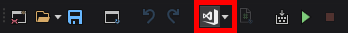
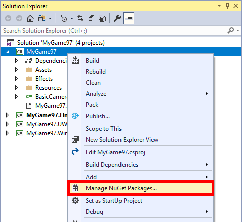
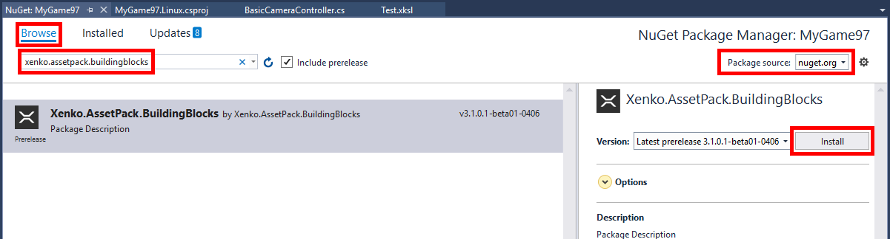
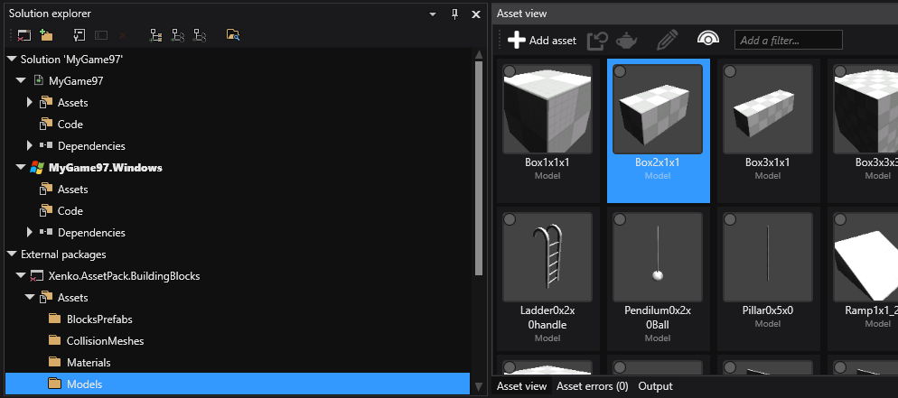

Consume packages
Warning
Приносим свои извинения за неудобства. Для этой страницы нет перевода на русский язык. Она будет отображаться на английском языке.
Beginner Programmer
Open your project in Visual Studio
Note
Game Studio will later support adding NuGet packages directly.
First of all, after saving all your changes, open your project with Visual Studio. You can easily do this by clicking the appropriate button on the toolbar:

Add a reference
In the Solution Explorer, right-click on the project and click on Manage NuGet Packages...

For our example, let's use
Stride.AssetPack.BuildingBlockspackage:- Choose "nuget.org" or "All" as the Package source
- Make sure Include prerelease is checked (if necessary)
- Go to the Browse tab
- Search for a Stride asset package (i.e. Stride.AssetPack.BuildingBlocks) and select Install

Save the Visual Studio project.
Use assets in Game Studio
In Game Studio, go to the File menu and select Reload project
You should now be able to see the referenced project and its assets in Solution explorer

Note
Those assets are readonly and as such can't be dragged and dropped into the scene. This will be fixed soon. In the meantime, you can still use the asset selector to change an existing model or material reference to one from the asset pack.